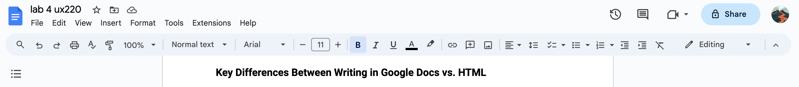

Google Docs is a really easy way, arguably one of the simplest ways to start writing in a document file. The barrier to entry is quite low, given that there is some familiarity with the Google Suite of products, and if not that is also okay because of the intuitiveness of the website or app version of Google Docs, it just entails some reading of labels and the information needed by the user to create their first document will easily present itself.
From there, the user can just start typing and words will appear into that text editor. The menu toolbar is how users can access all the text and paragraph formatting tools with just a click. However, if they choose to do no further edits, whatever was typed in will still be visible and present with the default formatting. Unless a unique title is chosen by the user, the title will autofill to the first line of the document. It also autosaves the work and progress on a document by default.
Arial, left justified, 11 point font
In HTML, there is a slightly lower ease of use compared to typing in Google Docs. There is a higher barrier to entry because there are a few preliminary steps to set up the HTML file.
< !DOCTYPE html >
< html >
< p >
< /p >
< /html > Firstly, the doctype must be set, then the language, and only after a header or paragraph tag is declared then the body text can be added in. The different styling of the text must be indicated by different tags, the ‘default’ body text styling is the paragraph tag < p >. If the user doesn’t place their text into any tags, the text will not appear in the published page. The title of the HTML document is determined by the text (if any) placed inside of the < title > tags. Depending on the IDE used, there may or may not have an autosave function available.
Times New Roman, left justified, 16px